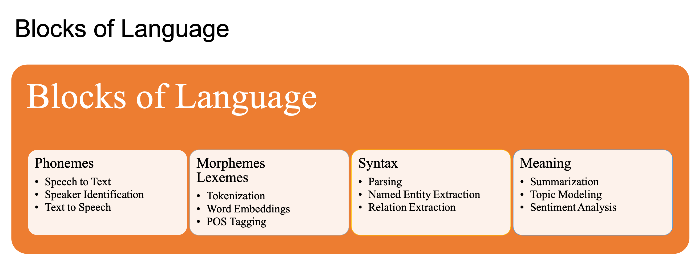

Natural Language Processing: A Primer#
Computational Linguistics is a very active subject in linguistics.
Natural Language Processing (NLP): It is a sub-field of computer science that deals with methods to analyze, model, and understand human language.
NLP Applications#

NLP Tasks and Language Blocks#

NLP Challenges#
Ambiguity
Creativity
Diversity
Common Knowledge (Context)
Artificial Intelligence, Machine Learning, Deep Learning and NLP#
Artificial Intelligence is a branch of computer sceience that aims to build systems that can perform taskes that require human intelligence.
Machine Learning is a branch of AI that deals with the development of algorithms that can learn to perform tasks automatically based on large number of examples, without requiring handcrafted rules.
Deep Learning is a branch of machine learning that is based on the artificial neural network architectures.
Approaches to NLP
Heuristics-based NLP
Machine Learning NLP
Deep Learning for NLP
Heuristics-based NLP#
Examples:
Dictionary-based sentiment analysis
WordNet for lexical relations
Common sense world knowledge (Open Mind Common Sense, Ontoloty)
Regular Expressions
Context-free grammar
Strengths:
Rules based on domain-specific knowledge can efficiently reduce the mistakes that are sometimes very expensive.
Machine Learning for NLP#
Types of machine learning:
Supervised vs. Unsupervised
Classification vs. Regression
Three common steps for machine learning
extracting features from texts
using the feature representation to learn a model
evaluating and improving the model
Common methods:
Naive Bayes
Support Vector Machine
Hidden Markov Model
Conditional Random Field
Deep Learning for NLP#
Sequence Models
Recurrent Neural Network (RNN)
Long-Term Short-Term Memory (LSTM)
Convolutional Neural Network (CNN)
Transformers
The state-of-the-art model in major NLP tasks
It models the textual context in a non-sequential mannwer.
Given a word in the input, the model looks at all the words around it and represent each word with respect to its context. This is referred to as self-attention.
Transfer Learning
It is a technique in AI where the knowledge gained while solving one problem is applied to a different but related problem.
We can use unsupervised methods to train a transformer-based model for predicting a part of a sentence given the rest of the content.
This model can encode high-level nuances of the language, which can be applied to other relevant downstream tasks.
Deep Learning is NOT Everything#
The trend now is to leverage large transformer models and huge datasets for generic NLP tasks like language models, and then adapt these pre-trained models to smaller downstream tasks.
Challenges
Overfitting on small datasets
Occam’s razor
Data accessibility
Domain adaptation
Interpretable models
Cost
Data guzzler
Specialized hardware (GPUs)
Deployment and maintenance
On-device deployment
Conclusion#
Deep learning is not always the go-to solution for all industrial NLP applications.
Many deep learning models are not interpretable enough to indicate the sources of empirical gains.
References#
Chapter 1 of Practical Natural Language Processing. [1]
- 1
Sowmya Vajjala, Bodhisattwa Majumder, Anuj Gupta, and Harshit Surana. Practical Natural Language Processing: A Comprehensive Guide to Building Real-World NLP Systems. O'Reilly Media, 2020.